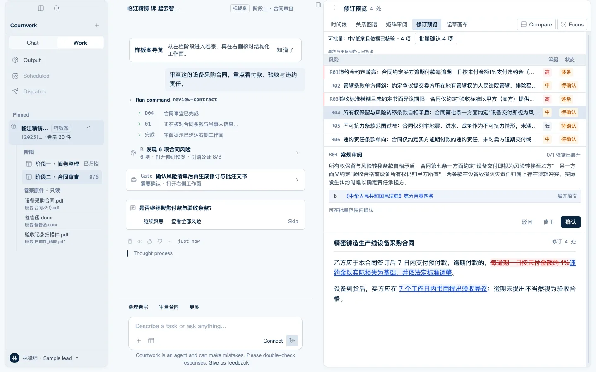
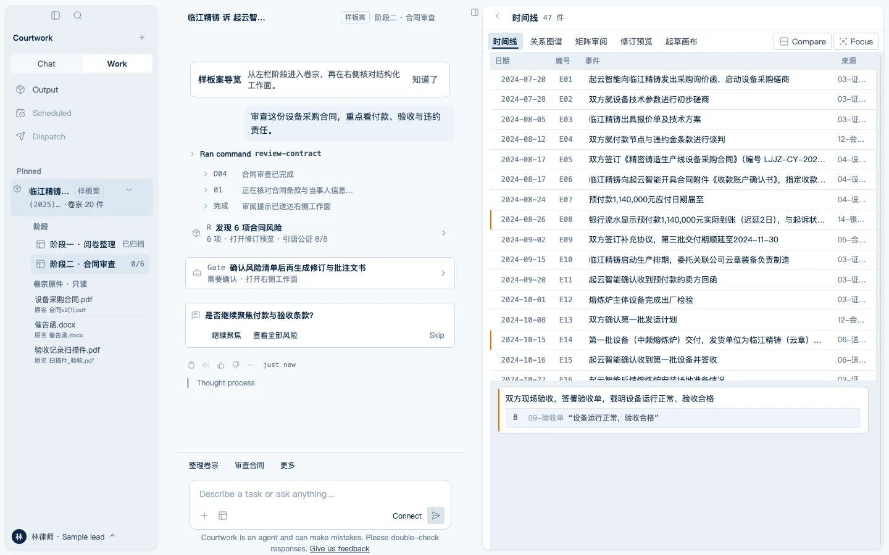
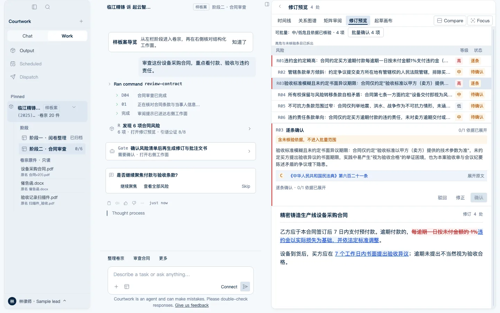
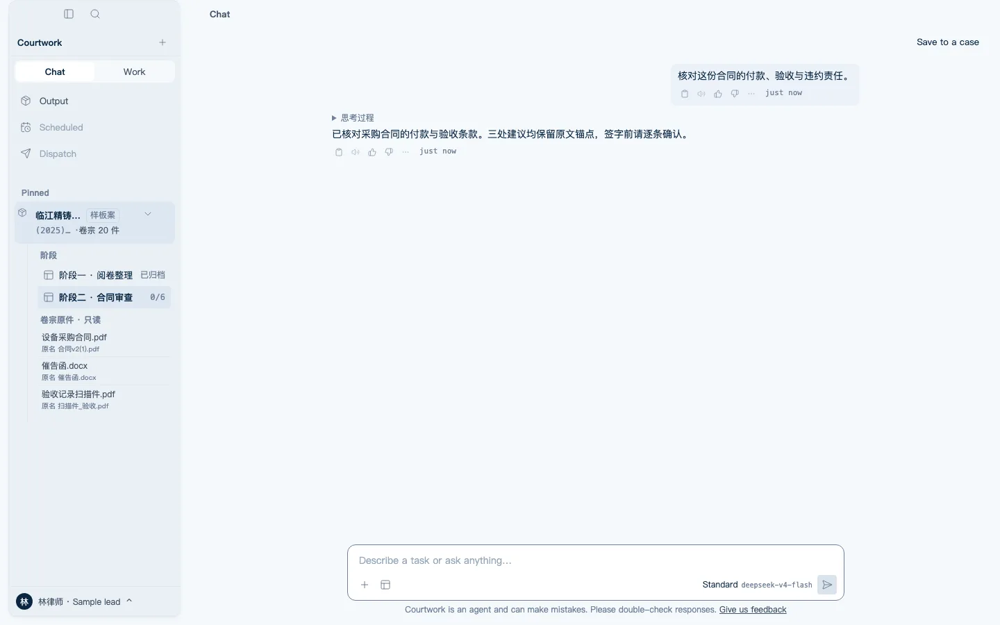

法律团队的工作台
模型只生成，
不裁决。
Courtwork 是法律团队的工作台——案件装进文件夹，产出带着来源，签字之前一切可回溯。
v0.1.1SHA-256 65e05db7fca017c8b4580a0050744c6168062d285eb5b0caf7a056c0dad856f7本地运行

三招牌场景
把能力装进秩序里。
拖入乱卷，一键成卷
整理计划先给你看，确认才动手，全程可撤销。

时间线自动抓出矛盾
文本里没有“矛盾”二字的矛盾。每一条都有原文锚点。

审查出的是带修订痕迹的 Word
逐条确认、驳回留痕，依据是可点开的法条原文。

数据承诺
四句话，写进产品。
案件内容永不用于训练
数据在你的电脑上，按案件隔离
卷宗原件永远只读
不可逆动作永远等你确认
192 条端到端断言与 16 道机器门禁在每次构建时守护以上承诺。
工艺
法理之线。
一条 2px 的竖线有五种颜色，分别是危险、注意、修订、依据、驳回——它只出现在需要你判断的地方。滚动到此处时，线依次点亮。
- 危险高危待处理
- 注意依据未核验
- 修订已修订待确认
- 依据权威来源已核验
- 驳回退出工作集
真回复
思考可回看，也可以安静地收起。

Courtwork